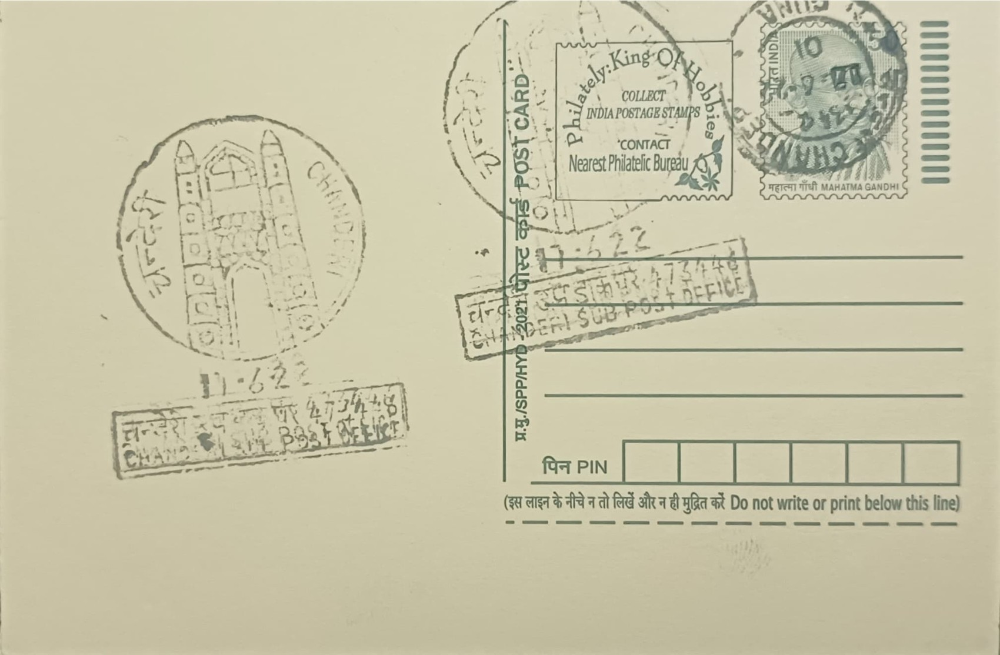

Badal Mahal
बादल महल


The name Badal Mahal, literally "palace of the clouds," is traditionally explained by the gateway's soaring turrets, which were said to rise so high that they appeared to brush the sky. Local tradition also holds that the archway once marked the entrance to an adjoining royal palace called Badal Mahal, from which the gate inherited its name even though the palace itself has long since vanished, leaving the freestanding gateway as the only surviving trace of that complex.
Classified among the finest surviving examples of Malwa Sultanate architecture, the Badal Mahal Gate holds a place as one of Chanderi's most recognisable monuments and is frequently used as a visual emblem for the town itself. It is protected as a monument of national importance under the Archaeological Survey of India, reflecting its historical value within the broader cluster of Sultanate-era forts, mosques, and palatial remains that define Chanderi's medieval urban core at the meeting point of Malwa, Bundelkhand, and Delhi Sultanate influence.
The gateway was erected in the mid-15th century, commonly dated to around 1450, under Sultan Mahmud Shah Khilji I of the Malwa Sultanate, most likely to commemorate a military success or royal occasion. It is a freestanding, double-storeyed stone structure rising over 15 metres in height and roughly 7.5 metres in width, flanked by a pair of tall, fluted, tapering turrets in a manner recalling Tughluq-era Delhi architecture, with a central arched passage designed as a triumphal entrance into the inner city.
A distinguishing feature of the gate is the decorative scheme above its main arch, where a recessed gap is surmounted by a secondary arch filled with stone jaalis cut in four distinct geometric patterns, allowing filtered light and air through the screen while adding intricate visual texture to the facade. Flanking the entrance are carved floral roundels, echoed in miniature on the turrets, alongside small arched facade motifs and geometric ornamentation that together illustrate the fusion of indigenous Indian craftsmanship with Islamic architectural forms characteristic of Malwa Sultanate monuments.
Standing at the southern end of Chanderi's old town, the gate is counted alongside nearby structures such as Kushak Mahal and the Jama Masjid as part of the Archaeological Survey of India's listed monuments in the area, and it continues to be maintained as an open heritage site accessible to visitors rather than an enclosed ruin. The gate's silhouette is commonly used in tourism material to represent Chanderi as a whole, and it is this role as the town's visual signature, rather than any residential or defensive function, that defines how the monument is experienced today.
| Date of Introduction | August 6, 2019 |
|---|---|
| Address | Sub Postmaster, |
| Chanderi SO, | |
| Ashok Nagar (dt.), Madhya Pradesh - 473446. |